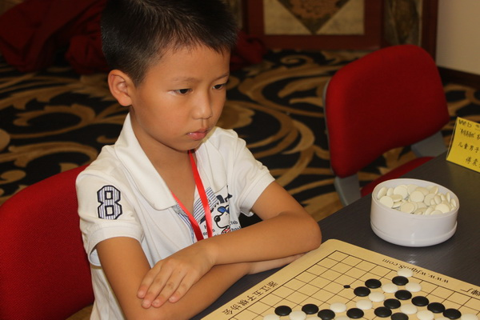

小荷才露尖尖角
#1 小荷才露尖尖角 作者：小丸.net 发表时间：2011-8-22 1:34:24
在21号下午结束的浙江五子棋公开赛儿童男子D组的比赛中，小将徐毅宽豪取八连胜，提前一轮锁定桂冠。比赛结束我就随便与小宽的妈妈和老师交流了一下。
一个活泼可爱的小男孩，长得很帅气，其实他学棋时间并不长，才5个月不到，而且是断断续续的学。他的老师是大家很熟悉的台州卢跃进老师，相信大家都知道，戴宇轩是卢老师的得意门生，目前，小宽跟着卢老师学棋，不到半年就显现出了他的水平，目前水平已经排到卢老师11个学生中的第二位，可见这座奖杯并不是虚荣。

卢老师说，小宽原来并不是学五子棋的，他的“四国军棋”是最历害的，在QQ游戏里鲜有对手。看来小宽有学棋的天份。
正好住在小宽他们房间对成，与他妈妈的交流中，得知，目前小宽今年才不满8岁，很调皮，一刻不能停，很喜欢打电脑游戏。
问他：夺冠了想干嘛?他说，想捧一捧奖杯，然后把奖杯送给妈妈，然后亲亲她。
说完这些，小宽一溜烟就不见了。
问他最后一轮为什么会和了，他很开心的说：反正都冠军了，给对手留点分吧。
童言无忌。
小荷才露尖尖角，希望小宽能在以后的道路上，更加努力的去学习，以后成为一个更优秀的棋手。
［ an128 于 2011-8-22 10:02:11 时花50金币砸了你一个臭鸡蛋］
［ 掌棋宣传员 于 2011-8-29 10:25:19 时花20金币送鲜花一朵］
［ 掌棋宣传员 于 2011-8-29 10:25:22 时花20金币送鲜花一朵］
［ 掌棋宣传员 于 2011-8-29 10:25:26 时花20金币送鲜花一朵］
#2 Re:小荷才露尖尖角 作者：蓝天蓝 发表时间：2011-8-22 6:27:08
恭喜 小朋友#3 Re:小荷才露尖尖角 作者：an128 发表时间：2011-8-22 7:32:14
发不了图片。
徐毅宽：6岁开始学棋，2009年8月（学棋约2个月）参加全国五子棋锦标赛获得第30名。希望他有更大的成就。
另：“问他最后一轮为什么会和了，他很开心的说：反正都冠军了，给对手留点分吧。”和了就是和了，不用巧言辞令，让对手情何以堪。小孩童言无忌，楼主不应该呀。
［此帖子已被 an128 在 2011-8-22 8:08:23 编辑过］
［此帖子已被 an128 在 2011-8-22 8:09:33 编辑过］
［ 萱萱 于 2011-8-22 22:59:43 时花20金币送鲜花一朵］
#4 Re:小荷才露尖尖角 作者：连心 发表时间：2011-8-22 8:24:42
厉害啊，不知和胡喻比如何
#5 Re:小荷才露尖尖角 作者：屏蔽 发表时间：2011-8-22 8:30:52
 如果再给我一次机会，我绝对不会向朱佳晨提和。
如果再给我一次机会，我绝对不会向朱佳晨提和。
#6 Re:小荷才露尖尖角 作者：掌棋如烟 发表时间：2011-8-22 10:29:56
小孩的童言无忌,算账找上楼主了,同情一哈,出门右转了#7 Re:小荷才露尖尖角 作者：an128 发表时间：2011-8-22 10:45:45
台州是怎么培养的？出了那么多的高手，特别是在B组下的那小孩，竟然得了4分。#8 Re:小荷才露尖尖角 作者：小元 发表时间：2011-8-22 11:57:43
恭喜一下
#9 Re:小荷才露尖尖角 作者：瑞星棋童 发表时间：2011-8-22 13:38:56
真是后生可畏啊#10 Re:小荷才露尖尖角 作者：有志青年 发表时间：2011-8-22 13:48:38
台州五子棋的成绩，这与卢老师多年来坚持不懈的付出密不可分。
当年的戴宇轩，如今的徐毅宽，都取得了傲视同龄人的成绩
#11 Re:小荷才露尖尖角 作者：黑白之巅 发表时间：2011-8-22 14:41:28
看到了中国五子棋的未来和希望
#12 Re:小荷才露尖尖角 作者：以和为贵 发表时间：2011-8-22 14:57:25
后继有人
#13 Re:小荷才露尖尖角 作者：连心 发表时间：2011-8-22 15:09:30
小孩关键是培养兴趣#14 Re:小荷才露尖尖角 作者：卢老师 发表时间：2011-8-22 17:33:37
 得意门生是罗智瑶、陶俊哲。不是戴宇轩和徐毅宽；学习好才是真的好。希望不要误导更多的孩子，出来澄清一下，望更多的孩子不要走弯路。
得意门生是罗智瑶、陶俊哲。不是戴宇轩和徐毅宽；学习好才是真的好。希望不要误导更多的孩子，出来澄清一下，望更多的孩子不要走弯路。
今天和海宁南苑小学的吕老师沟通一下，吕老师说：学生人品好很重要。中午陈卫忠老师带路，施展等几个小孩走中间，吕老师随后，队伍整齐，似一列动车。非常的和谐，快乐的踏上回程。
我的口号：孩子们努力学习，大人们努力工作，业余爱好玩得开心就好。最后祝愿爱五子棋网的广大棋友大家生活如意。
#15 Re:小荷才露尖尖角 作者：为万世开太平 发表时间：2011-8-22 18:16:46
不知道这位老师说的弯路是指什么?"学习好才真的好"这话听着真不爽.队伍整齐不一定是好事.老师看过<死亡诗社>吗?没看的话看一下.#16 Re:小荷才露尖尖角 作者：掌棋如烟 发表时间：2011-8-22 18:29:57
楼上,至少懂得排队的小孩子要懂事可爱的多,如果把艺术往生活上套,很杯具....#17 Re:小荷才露尖尖角 作者：流澜 发表时间：2011-8-22 19:22:49
谁发一下D 组的成绩啊~~#18 Re:小荷才露尖尖角 作者：深海鱼 发表时间：2011-8-22 21:25:55
队伍整齐是为了路上让小孩子安全嘛，有什么不好的。［ 卢老师 于 2011-8-22 21:28:49 时花20金币送鲜花一朵］
#19 Re:小荷才露尖尖角 作者：炫飞盈儿 发表时间：2011-8-23 6:12:46
Re:小荷才露尖尖角人才辈出呀！希望他继续加油！
#20 Re:小荷才露尖尖角 作者：蓝天 发表时间：2011-8-23 6:43:46
五子棋后继有人了#21 Re:Re:小荷才露尖尖角 作者：an128 发表时间：2011-8-23 9:46:53
卢老师的想法很正统。#22 Re:Re:小荷才露尖尖角 作者：锐 发表时间：2011-8-24 18:36:15
引用：棋好，人品也要好！对于此次比赛中的个别孩子，相信月饼MM也是深有体会吧！
原文由 为万世开太平 发表于 2011-8-22 18:16:46 :
不知道这位老师说的弯路是指什么?".
#23 Re:小荷才露尖尖角 作者：吉小鼠 发表时间：2011-8-29 0:28:37
小朋友好好加油~~~~~
不过话说五子棋在小孩里面的普及度……
大家加油~~
#24 Re:Re:小荷才露尖尖角 作者：尕孩 发表时间：2011-8-29 10:12:50
藝術是生活的一種錶現形式，不杯具……